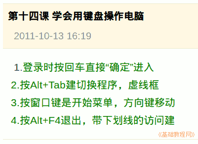

2011-2012 第一学期七年级电脑操作基础教学课程设计
作者：TeliuTe 来源：基础教程网
十四、学习用键盘操作电脑 返回目录 下一课
学习目标：学习常用的键盘访问键；
注意事项：使用键盘可以快速操作电脑；
1、用键盘操作电脑
1）登录时输密码完成后直接按回车键；
2）切换多个程序时用 Alt+Tab 键；
3）窗口键可以调出开始菜单；
4）退出是 Alt+F4键；

板书设计：第14课 学会用键盘操作电脑
1.登录时按回车直接“确定”进入
2.按ALT+TAB键切换程序，虚线框
3.按窗口键是开始菜单，方向键移动
4.ALT+F4退出，带下划线的访问键
课后记 2011-10-13 17:44：
还有两个班要上，先记一下先
进来之前要求好，这节课尽量用键盘
--
讲解的时候多提问，这样注意力要集中一些
稍微有些啰嗦，要求的按键有些多了
--
发日志的时候，盯着慢的最后出来了
发现有抄袭的，逮住就狠批一顿
--
有个油嘴滑舌的脑袋上拍了一巴掌，
学生没个学生样，不学习的后果就是挨揍
--
后面的班心急火燎的，讲的不怎么听
顿一下经常收收心，还得培养习惯
--
老师讲的时候注意力集中，这样才能学会
不过键盘操作并不是必须的，只是多学些技能
--
需要四个班给些差异，这样输入笔记的时候
可以找出是不是抄袭的，改动一两个字就可以了
--
把火狐的新标签和手势教一下
这样就可以放在那儿等老师来检查
本节学习了用键盘操作电脑的基础知识，如果你成功地完成了练习，请继续学习下一课内容；
返回目录 下一课
本教程由86团学校TeliuTe制作|著作权所有
基础教程网：http://teliute.org/
美丽的校园……
转载和引用本站内容，请保留版权信息和本站链接。